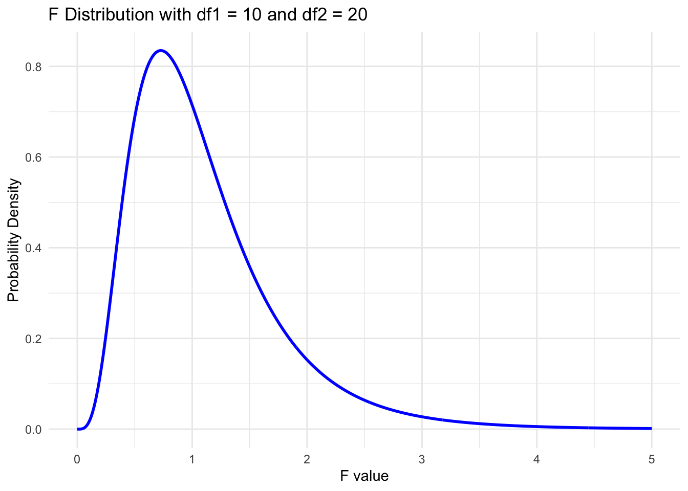
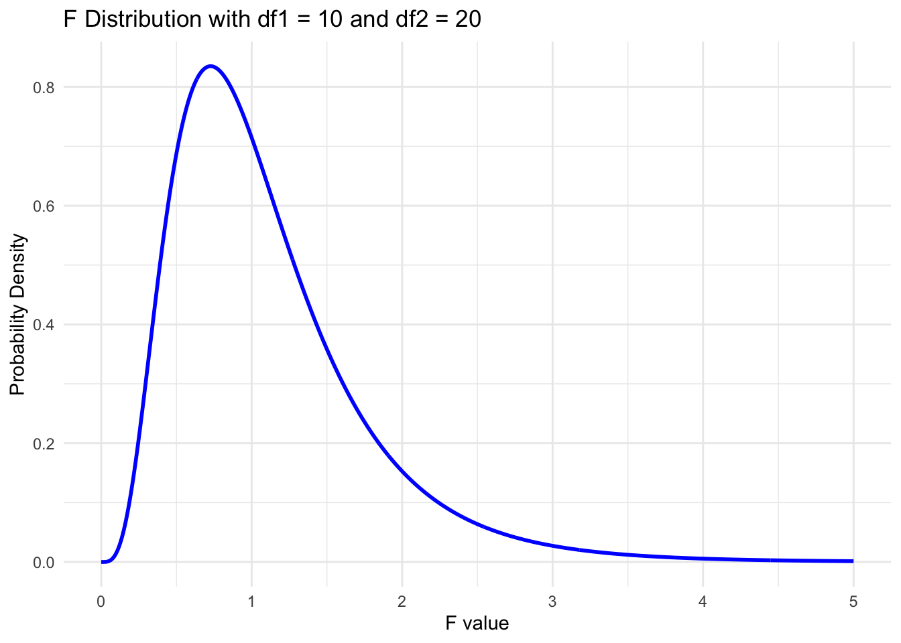

Loading required package: pacman
KIN 610 - Spring 2023
Furtado (2023)
RandomStats - One-Way ANOVA (drfurtado.github.io)
One-way Analysis of Variance (ANOVA) is a statistical technique used to compare the means of three or more groups. It is an extension of the t-test, which can only compare the means of two groups. The main purpose of one-way ANOVA is to determine if there are any significant differences among the group means.
If the null hypothesis is rejected, post-hoc tests can be conducted to identify the specific group differences.
Sum of squares is calculated using the following components:
Sum of squares between groups (SSB): It measures the variability among group means.
\[ SSB = Σk(Ŷi. - Ŷ..)² / ni \]
where k is the number of groups, Ŷi. is the mean of group i, Ŷ.. is the grand mean, and ni is the number of observations in group i.
Sum of squares within groups (SSW): It measures the variability within each group.
\[ SSW = ΣΣ(Yij - Ŷi.)² \]
where Yij is the observation j in group i, and Ŷi. is the mean of group i.
Total sum of squares (SST): It measures the total variability in the data.
\[ SST = ΣΣ(Yij - Ŷ..)² \]
The F-ratio is calculated using the mean squares, which are obtained by dividing the sum of squares by their respective degrees of freedom.
Mean squares between groups (MSB):
\[ MSB = SSB / (k - 1) \]
where k is the number of groups.
Mean squares within groups (MSW):
\[ MSW = SSW / (N - k) \]
where N is the total number of observations.
F-ratio:
\[ F = MSB / MSW \]
The F-ratio follows an F-distribution with (k - 1) and (N - k) degrees of freedom. The F-ratio is then compared to the critical value from the F-distribution table at a given significance level (usually α = 0.05) to determine if the null hypothesis can be rejected.
Loading required package: pacman
The F distribution, also known as the Fisher-Snedecor distribution, is a continuous probability distribution that is widely used in statistical hypothesis testing, particularly in the analysis of variance (ANOVA). It is named after Ronald A. Fisher and George W. Snedecor, two prominent statisticians who contributed significantly to its development.
The F distribution has two important parameters: degrees of freedom for the numerator (df1) and degrees of freedom for the denominator (df2). These parameters define the shape of the distribution. Some key characteristics of the F distribution are:
The F distribution is central to the analysis of variance (ANOVA) and other statistical tests that involve comparing variances or assessing the effects of different factors on a response variable. In these applications, an F statistic is calculated as the ratio of two mean square values (MS), which are derived from sums of squares (SS) and degrees of freedom:
F = (MS_between groups) / (MS_within groups)
F Statistic and Group Differences
Hypothesis Testing with F Statistic
Note: In these equations, \(SS_{between}\) represents the sum of squares between groups, \(SS_{total}\) represents the total sum of squares, \(SS_{error}\) represents the sum of squares error (also known as the residual sum of squares), \(df_{between}\) represents the degrees of freedom between groups, and \(MS_{error}\) represents the mean square error (calculated as \(SS_{error} / df_{error}\)).
Tukey’s HSD Test
Bonferroni Test
Scheffé’s Test
Games-Howell Test
Assumption of Equal Variances
Sample Sizes
Conservativeness vs. Power


A one-way analysis of variance (ANOVA) was conducted to determine whether there were significant differences in flexibility scores among three groups. Results revealed a significant main effect of group on flexibility scores, \(F(2, 42) = 53.65, p < .001, \eta_{p}^{2} = .72\). Post hoc pairwise comparisons using Tukey’s HSD test showed that group B had significantly higher flexibility scores compared to both groups A (\(p < .001\)) and C (\(p < .001\)). However, no significant difference was found between groups A and C (\(p = .40\)). These findings suggest that group B had significantly better flexibility scores than groups A and C, while groups A and C did not differ significantly in terms of their flexibility scores.
The nonparametric equivalent to the one-way ANOVA is the Kruskal-Wallis test. It is used when the assumptions of normality and homogeneity of variance are not met.
The Kruskal-Wallis test ranks the data and compares the medians of the groups instead of the means.
Like the one-way ANOVA, it tests the null hypothesis that there is no difference between the groups, and the alternative hypothesis that at least one group differs from the others.
Open the data set in jamovi.
Click on the “ANOVA” button and under “Nonparametric Tests”, select One-way ANOVA Kruskal-Wallis.
Drag the dependent variable to the “Test Variable” box and the grouping variable to the “Factor” box.
Click “Run” to obtain the test results.
Open the data set in SPSS.
Click on “Analyze” and select “Nonparametric Tests” from the drop-down menu.
Select “Independent Samples” from the list of available tests.
Move the dependent variable to the “Test Variable List” box and the grouping variable to the “Grouping Variable” box.
Click on the “Options” button and select “Kruskal-Wallis H” from the list of available tests.
Click “Continue” and then “OK” to run the test.
Open R and load the necessary packages (e.g., “tidyverse”, “rstatix”).
Load the data set into R using the read.csv() or read.table() function.
Use the kruskal.test() function to conduct the Kruskal-Wallis test, specifying the dependent variable and grouping variable.
Use the summary() function to obtain the test results.
(Optional) Use the dunn_test() function from the “rstatix” package to conduct post-hoc pairwise comparisons.